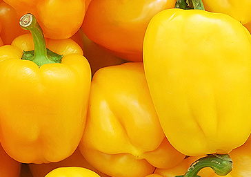
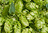
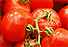

Natural and fresh goods only!from farm to market
The best agricultural marketing technologies
Harvest
Good practices of harvest and processing of agricultural products provide high quality product that fetch alot of prices from the market.What does your plant do to prepare for harvest? Has your plant had success employing any of the strategies listed above
Cultivation
Cultivation of plants requires intensive care and management. The principles of good plant husbandry, including appropriate rotation of plants selected according to environmental suitability, should be followed, and tillage should be adapted to plant growth and other requirements.
Protection
Crop protection is the science and practice of managing plant diseases, weeds and other pests (both vertebrate and invertebrate)that damage agricultural crops and forestry. Agricultural crops include field crops (maize, wheat, rice, etc.), vegetable crops (potatoes, cabbages, etc.) and fruits. The crops in field are exposed to many factor. The crop plants may be damaged by insects, birds, rodents, bacteria, etc. Crop protection encompasses: .
Treatment
To help control weeks and temperature, most of our crops are planted on beds mulched with plastic. These are actually made of polyethylene materials, specially manufactured to stand up to the sun. The mulch comes on a large (heavy!) roll which may hold 2000-4500' of mulch.
Company Products
 Pilipili hoho farming in Kenya is very lucrative: the demand for pilipili hoho is very high, and an acre of pilipili hoho can give an income of Ksh 500,000 or more in a single season of 4-6 months.
Pilipili hoho do not grow tall (mature plants are usually less than 50 cm high but can also reach 3 feet in height), and are not too wide (1 to 3 feet). An acre of land can hold about 10,000 pilipili hoho plants when planted at the recommended spacing of 75cm by 45cm. If you harvest a minimum of 10 peppers from each pilipili hoho plant, it means that with good management, top dressing and pest & disease control, an acre of land can yield over 100,000 fruits per season.Technologies

Every farmer looks for tricks to better tomato farming in Kenya. Most Kenyan farmers started with tomato farms having been told of the huge profits in the market. The truth sometimes is hard to bear as a lot of us, small scale farmers have lost fortunes in tomato farming Kenya .
